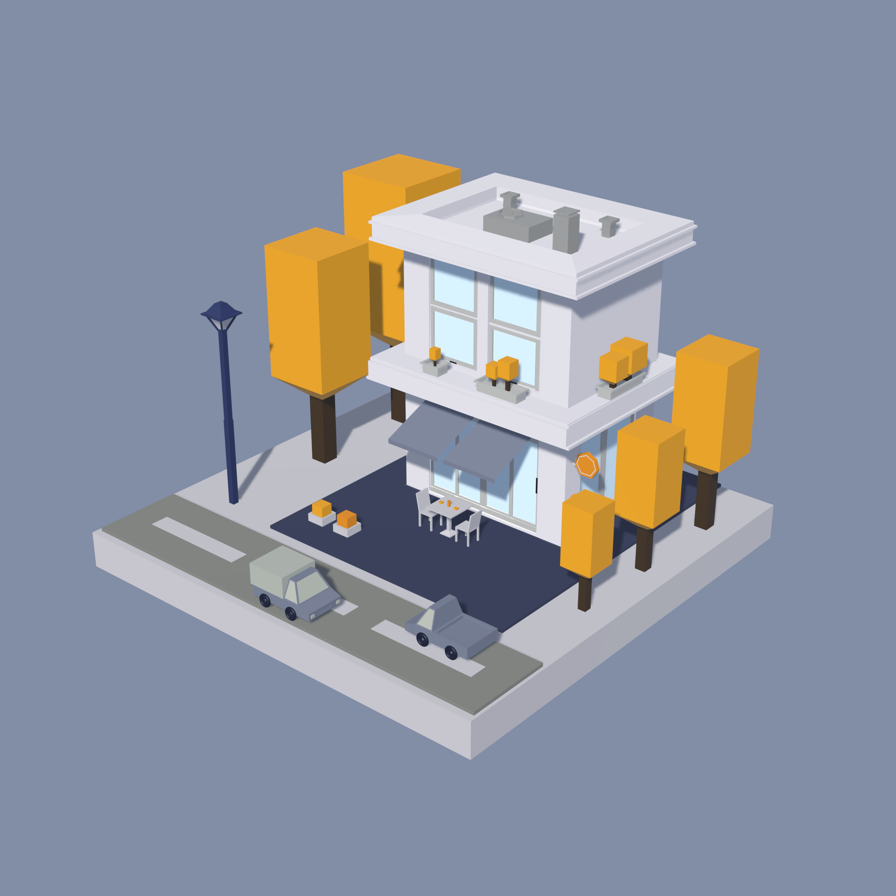
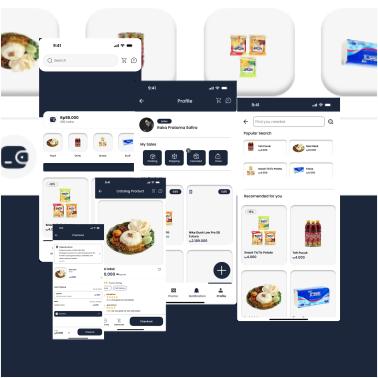
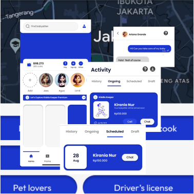
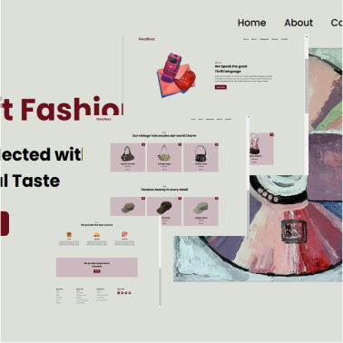

hi
I am
Cantika
Azka Aqila
a Software Engineering student at SMKN 46 Jakarta with a strong passion for UI/UX Design. I have experience in designing user interfaces for various website and mobile application projects. I am committed to continuously improving my design skills and delivering optimal solutions for enhanced user experiences.
2
Years of
Experience
5+
Project
Completed
2
Years of
Experience
5+
Project
Completed
My Quality Services
I offer a range of quality services tailored to meet diverse needs
01
Web Develop
Crafting responsive and dynamic websites with a focus on functionality and user experience.
02
UI/UX Design
Creating intuitive and user-centered designs that enhance usability and engagement.
03
Graphics Design
Delivering visually appealing designs that communicate ideas effectively through branding, illustrations, and digital art.
04
3D Design
Developing 3D models and visualizations to bring concepts to life with depth and realism.
My Recent Works
Explore my recent projects that demonstrate dedication to excellence and creativity
-

Design
- Design for LMS Website.
-

Design
- eLearn LMS Flyer.
-

Design
- Blog Design Competition.
-

Design
- Poster Design.
-

Design
- 3D Coffee Shop.
-

Design
- 3D Project, Urban House.
-

UI/UX
- UI/UX Design for SleepWell Website,
Skilled Generation Competition.
-

UI/UX
- UI/UX Design for Thrift Website.
-

UI/UX
- UI/UX Design for e-Commerce Application.
-

UI/UX
- UI/UX Design for Kiddie Keeper Application.
-

Design
- LMS Website.
-

Design
- Thrift Goods Website.